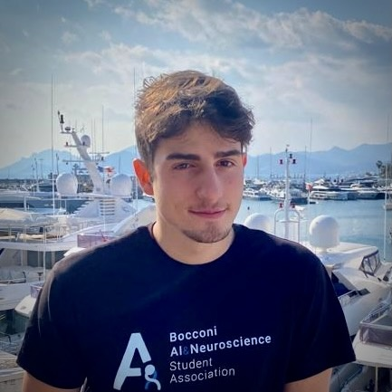
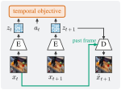
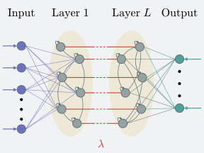
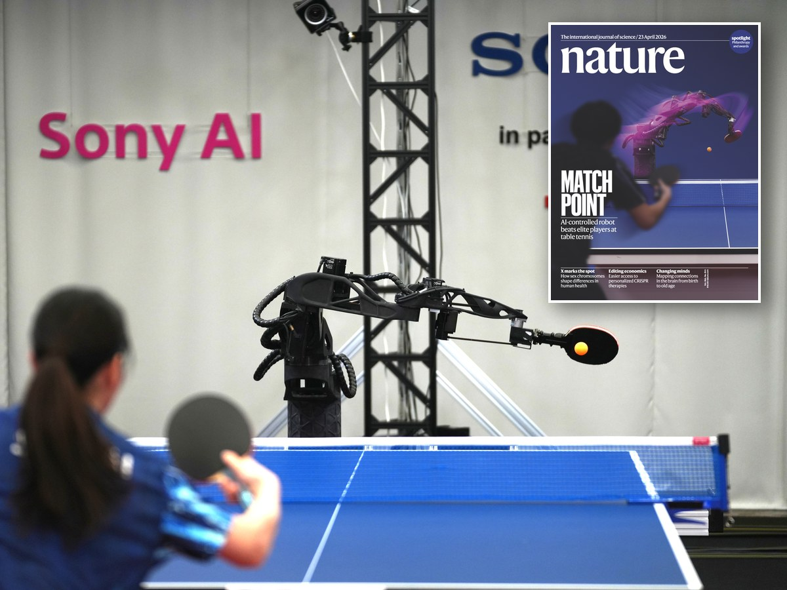

Mattia Scardecchia
PhD student, NYU Courant

I am a second-year PhD student at NYU Courant, advised by Prof. Sherry Yang. Broadly, my research aims to (i) enable learning from experience for acting in the physical world, through reinforcement learning and world models, and (ii) use tools from statistical mechanics to understand local and distributed learning, as a route to energy-efficient machine learning and to computational models of the brain.
I received my MSc in AI and BSc in Mathematical and Computing Sciences for AI from Bocconi University, where I was advised by Prof. Riccardo Zecchina. I've also worked as an AI Research Engineer at Bending Spoons on Remini, an AI photo-editing app with 70M active users at the time, and as a Research Scientist intern at Sony AI on Project Ace, the table-tennis robot featured on the cover of Nature.
Selected publications
-

-

-
